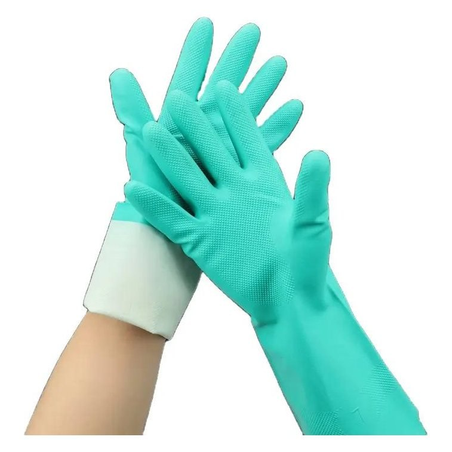
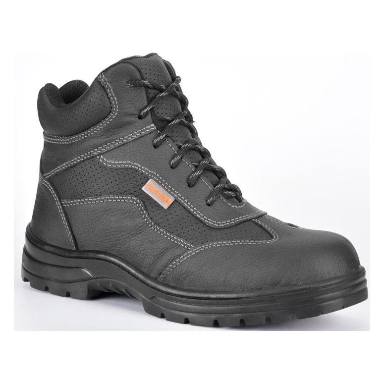
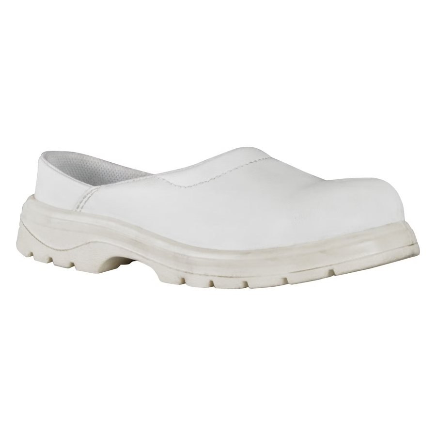
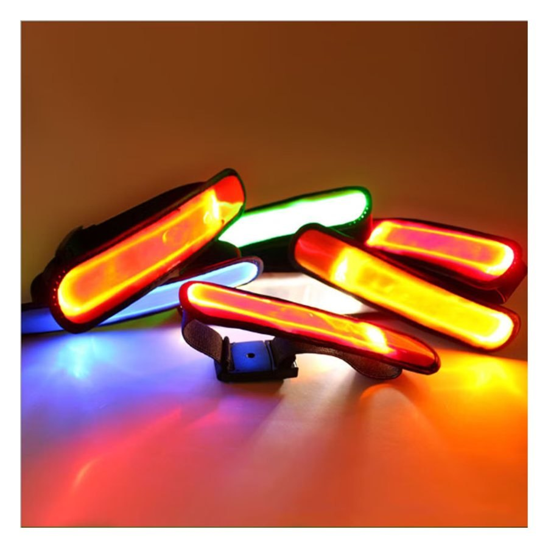
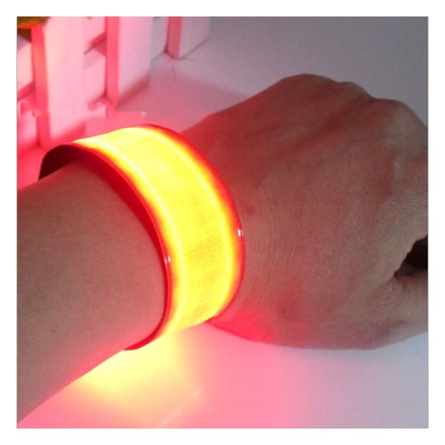
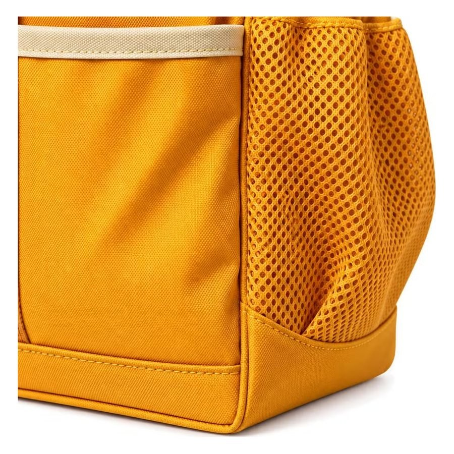

Home / Personal protective equipment (PPE) / Heat-protection gloves

Illustration similar – shows the product type.
Personal protective equipment (PPE)
Heat-protection gloves
Quilted cotton glove with silicone/PVC strips for hot workpieces, stove and fireplace accessories.
Heat-protection gloves protect hands and wrist when handling hot workpieces, oven doors and fireplace accessories.
Technical data
| Material | Cotton, silicone, PVC |
|---|---|
| Length | 25 cm |
| Size | S; other sizes on request |
| Limitation | No protection against hot liquids, do not use wet |
| Packing | 1 pair per sealed bag, 60 pairs per carton |
| Customs tariff number (HS) | 61161080 |
EU standards and regulations
(EU) 2016/425PPE Regulation (EU) 2016/425 (CE marking, EU type-examination depending on category)EN 407:2020Protective gloves against thermal risks (heat and/or fire), ratings for contact heat and flammabilityEN ISO 21420:2020Protective gloves – general requirements (sizing, skin compatibility, marking)EN 388:2016+A1:2018Protective gloves against mechanical risks (abrasion, cut, tear, puncture)
Goes well with
More products in this category

Disposable coverall Type 5/6 (Cat III)Hooded disposable coverall against particles and light spray for demolition, strip-out and asbestos remediation.
Chemical protective coverall Type 3/4 (disposable, Cat III)Liquid-tight and spray-tight disposable coverall with sealed seams for hazardous-substance handling, decontamination and remediation.
Nitrile disposable gloves, powder-free (box of 100)Powder-free, latex-free nitrile disposable gloves for paints, adhesives, cleaning agents and dirt on site.
Nitrile-coated assembly gloves EN 388 (nylon knit liner)Grippy assembly and mechanic gloves with nitrile palm coating for drywall, formwork and material handling.
Cut-resistant gloves EN 388 level C/D (HPPE knit liner)Cut-resistant gloves for sheet metal, glass, boards and demolition material with a declared cut level C to D.
Safety helmet EN 397 (ABS, 6-point suspension)ABS industrial safety helmet with 6-point suspension against falling objects on site.
Industrial climbing helmet EN 12492 (ABS, chin strap, dial adjustment)Chin-strap helmet for work at height, rope access and rescue – protects against impact and lateral blows.
Safety glasses EN 166 (clear, polycarbonate, scratch-resistant/anti-fog)Clear safety glasses with side protection against splinters, dust and splashes during grinding, drilling and demolition.
Full-vision / cup goggles EN 166 (indirect ventilation)All-round sealing goggles against splashes, dust and fragments during cutting, demolition and handling of liquids.
Ear defenders EN 352 (SNR approx. 27–30 dB)Headband ear defenders against construction noise during chiselling, demolition and cutting work.
Earplugs EN 352-2 (PU foam, tub of 50 pairs)Foam earplugs with high attenuation for noisy areas, e.g. cutting, hammer drilling and vibrating poker work.
Safety shoe S3 (leather, steel toe cap + steel midsole)Leather S3 safety shoe with steel toe cap and penetration-resistant steel midsole for shell construction, demolition and strip-out.
Safety boot S3 (leather, steel toe cap + steel midsole)Ankle-high safety boot with steel toe cap and penetration-resistant sole for shell construction, civil engineering and demolition.
Forestry helmet combination (helmet EN 397, mesh visor EN 1731, ear defenders EN 352-3)Matched set of safety helmet, stainless-steel mesh visor and ear defenders for chainsaw, brush cutter and timber harvesting.
PCM cooling vest with spare cooling packs (set, 21 °C)Vest with phase-change material (PCM) for hot work that cools passively from 21 °C and is topped up with exchangeable cooling packs.
Bump cap EN 812 (ABS insert shell, baseball style)Lightweight bump cap with an ABS insert shell for workshops, logistics and food plants where no falling-object protection per EN 397 is required.
Electrician's safety helmet EN 397 / EN 50365 (up to 1,000 V AC, unvented shell)
Safety helmet with integrated visor (EN 397, eye protection EN 166)ABS/EPS safety helmet with goggles or visor and chin strap for electrical, mining and construction work.
Replacement suspension with sweatband for safety helmets (4-point, PVC/nylon)Replaceable 4-point suspension with knitted sweatband to refresh used safety helmets.
Chin strap for safety helmets (elastic, adjustable)Elastic chin strap for hard hats to secure the helmet when working at height and in wind.
Full-vision safety goggles EN 166 (direct ventilation, panoramic lens, elastic strap)All-round sealing goggles with direct ventilation against dust and chips, with a polycarbonate panoramic lens.
Over-spectacles EN 166 (for glasses wearers, polycarbonate, side protection)Safety glasses worn over prescription glasses, with a polycarbonate wraparound lens.
Welding goggles EN 166 / EN 169 (flip-front, welding glass 108 x 50 mm)Welding goggles with a flip-up filter lens of welding glass, indirect ventilation and elastic strap.

Face shield (polycarbonate visor, adjustable headgear)Clear polycarbonate visor on an ABS headband against particles, splashes and sparks during grinding, sawing and cleaning work.
Protective visor with mesh screen (steel mesh) and headbandBreathable mesh visor with adjustable headband for brush cutters, chainsaws and garden work.
Visor bracket for safety helmets (aluminium, replaceable PVC visor)Aluminium bracket with a 1 mm PVC visor that turns a safety helmet into face protection; visor replaceable on its own.
Laser safety glasses (OD6+, 532/1064 nm, polycarbonate, full frame)

Reusable earplugs (silicone, with connecting cord)Washable silicone earplugs on a cord, free choice of colour, about 4 g per pair.

Electronic ear defenders (sound amplification and limiting, SNR 33 dB)Ear defenders with microphones: amplify quiet ambient sounds and suppress loud ones; NRR 30 dB, 2 × AAA.
Ear defenders with helmet attachment (SNR 27 dB)Lightweight ear defenders for mounting on a safety helmet, SNR 27 dB, cup colours freely selectable.
Communication ear defenders with Bluetooth (ear-muffs, silicone cushions)Electronic ear defenders with Bluetooth, sound amplification and suppression, NRR 22–23 dB, SNR 26 dB.
Banded earplugs (earplugs on a headband, EN 352-2)Reusable silicone earplugs on a light plastic band that hang around the neck between uses.
Mechanic's gloves (synthetic-leather palm, spandex back, hook-and-loop cuff)Close-fitting assembly glove with synthetic-leather palm and silicone grip for fitters, workshops and maintenance.

Cowhide grain-leather gloves (assembly/driver glove, unlined)Unlined grain-leather glove with ergonomic thumb for assembly, warehouse and garden work.

Chemical-protection gloves (nitrile, green, 33 cm, reusable)Reusable nitrile glove with long cuff against acids, alkalis, oils and solvents in cleaning and maintenance.
Disposable latex gloves, powder-free (100 per box)Thin, elastic natural-latex disposable gloves for cleaning, workshop and food handling.
Welder's gloves (cow split leather, 35 cm gauntlet, EN 12477)Two-layer cow split leather gloves with long gauntlet against sparks, weld spatter and radiant heat.
Winter and thermal gloves (acrylic fleece lining, latex coating, hi-vis orange)Lined work glove with anti-slip latex coating for outdoor work, cold stores and winter building sites.
Anti-vibration gloves (EN ISO 10819)Cut-resistant work gloves with vibration damping for drilling, grinding and demolition tools.
Safety shoes S1 (low shoe, suede/mesh)Light S1 safety shoe with steel toe cap, antistatic and with energy absorption in the heel.

Safety shoes S1PS1P safety shoe with steel toe cap and penetration-resistant midsole for construction and industry.
Safety shoes S2 (water-repellent, high nubuck shoe)Water-repellent S2 safety shoe with steel toe cap in hydrophobic nubuck leather.

Safety shoes S3SSafety shoe of the new class S3S to EN ISO 20345:2022 with penetration-resistant midsole (PS).
Rubber boots with toe cap S5Waterproof PVC safety boot S5 with steel toe cap and steel midsole for wet work, concrete and farming.
Construction winter boots S3High waterproof S3 safety boot in nubuck leather for cold construction sites; winter lining and CI test on request.

ESD safety shoesStatic-dissipative safety shoe with steel toe cap for electronics manufacturing, cleanroom and warehouses.
Visitor safety overshoes with steel toe cap (reusable, slip-on)Reusable TPU overshoe with steel toe cap and slip-resistant sole that gives visitors temporary toe protection over street shoes in workshops and on site.
Insoles for safety shoes (PU foam with gel, shock-absorbing, trim-to-fit)Shock-absorbing comfort insole of PU foam and gel that fits safety shoes and work boots and makes long standing periods more comfortable.
Work positioning belt system EN 358 – positioning lanyard with rope adjuster (kernmantle rope, up to 2 m)Length-adjustable EN 358 positioning lanyard that clips to the side rings of a work positioning belt and allows hands-free work in position (pole, wall, roof).
Self-retracting lifeline EN 360 (webbing, with energy absorber, 1.8–3.5 m)
Anchor point EN 795 – portable anchor sling type B (polyester webbing sling, 1.2 m)Textile anchor sling that is wrapped around beams, columns or pipes and forms a portable anchorage point for a harness and a self-retracting lifeline.
Connector carabiner EN 362 (steel, screw/self-locking gate, 25 kN)Steel carabiner with self-locking gate and 19 mm opening that reliably connects harness, lanyard and anchor point.
Rescue lifting device EN 1496 (electric rescue/descent device, 300 kg)Electric lifting and descent device for height rescue that can raise or lower a casualty on a rope.
Y-lanyard with energy absorber (EN 354 / EN 355, approx. 2 m, two hooks)Twin-leg lanyard with energy absorber that connects the harness to the anchor point and keeps the user attached while changing anchorage.
Anchor sling EN 795 type B (webbing sling, approx. 1.5 m)Textile webbing sling that, wrapped around a load-bearing structure, forms a portable anchor point for one person.
Rope protector / edge protector for ropes (protective sleeve for rope access)Abrasion-resistant sleeve that protects a rope at sharp edges and friction points.
Gel knee pads (work safety, nylon/rubber, adjustable)Knee pads with gel cushion for tiling, flooring and installation work in a kneeling position.
Hard-shell knee pads (protective cap, padded, adjustable)Knee pads with a hard shell against puncture and pressure peaks for work on rough, sharp-edged surfaces.
Kneeling mat / knee cushion (NBR foam, approx. 44 × 39 × 6 cm)Thick, water-resistant foam mat as a knee support for floor, garden and installation work.
Skin protection cream for trades and industry (100 ml tube)Non-greasy protective cream applied before work that protects the skin against moisture, friction and soiling.
Skin care hand cream (tube, aloe/shea butter)
Liquid skin cleanser, 2 l pump bottle (hand cleaner with scrub particles)Liquid industrial hand cleaner with scrub particles against engine oil, grease and grime, in a 2 l pump bottle.
Hand wash paste, 2 l bucket (industrial hand cleaner, unscented)Hand wash paste in a 2 l bucket for workshop and site, against oil, grease and stubborn dirt.
Ethanol-based hand disinfectant gel (75 %, bottle with pump)Alcohol-based hand disinfectant gel for site and plant, usable without water.
Industrial hand cleaning wipes (tub of 50 wipes, 20 x 30 cm)Large wet hand cleaning wipes with a rough side against oil, grease, paint and soot, usable without water.
Sunscreen SPF 50+ for construction sites (lotion, water-resistant, 100 ml)
Leather welding apron of cowhide (24 x 36 in, 6 tool pockets, adjustable)Cowhide protective apron against sparks, weld spatter and heat, with adjustable straps and six pockets.
Welder's protective hood/cap of flame-retardant cotton (reusable)Reusable welder's cap of fire-retardant cotton protects head and hair from sparks and spatter.
Insulating protective gloves EN 60903 (Class 00, latex, up to 500 V AC)Latex electrician's glove for work on or near installations up to 500 V AC.
Chainsaw protective trousers (EN ISO 11393-2, cotton, adjustable belt)Forestry work trousers with built-in cut-protection lining for hand-held chainsaw work.
Replacement visor for face shields (PVC/PC clear, 8 x 15.5 in)Clear replacement screen of PVC or polycarbonate for helmet-mounted face protection.
Replacement strap for safety glasses (nylon cord with silicone ends)Retainer cord that slides onto the temples so the safety glasses stay secure on head or neck.

Warning armband (reflective with LED light, adjustable, CR2032)Adjustable armband with reflective surfaces and LED steady/flashing light for better visibility in the dark.

Reflective band for arm and leg (adjustable, 31-48 cm)Passive reflective band for wrist, arm, ankle or leg that returns headlight beams.
First-aid case DIN 13157 (workplace first-aid kit, with wall bracket)Filled workplace first-aid kit to DIN 13157 for workshop, building site and office.
Life vest / foam buoyancy vest for work at the water (EPE foam, nylon, adult)

PPE bag / equipment tote (canvas, open top, outer and inner pockets)Sturdy canvas tote for carrying and organising helmet, safety glasses, ear protection and gloves.
Lens cleaning wipes for safety glasses (alcohol-free, anti-fog, 40 wipes per box)Pre-moistened, alcohol-free lens wipes with anti-fog effect for safety glasses, visors and screens.
Disposable vinyl gloves, powder-free (box of 100)Latex-free clear PVC disposable gloves for food handling, cleaning and light-duty work.
Touchscreen-compatible assembly gloves (nylon/spandex, foam nitrile, 15 gauge)Thin knit gloves with foam nitrile, touchscreen-capable on three fingers.

Full-body harness EN 361 (polyester webbing)Full-body fall-arrest harness with dorsal D-ring.

Welding sleeves of cow split leather (pair)Spark-resistant arm protectors for welders.
Neoprene chemical-resistant gloves (30 cm, pair)Reusable gloves against acids and alkalis.
Safety sandals S1 (steel toe cap)Ventilated safety sandal for summer.